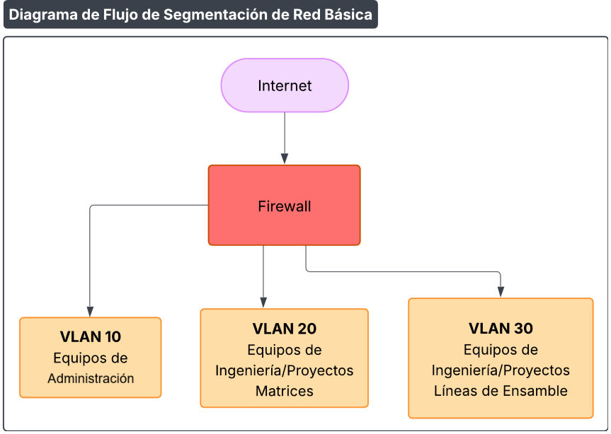

Procedimiento de Gestión y Segmentación de Red
Código: P527-IT-1
Última revisión: 9/3/2026
Rev. N°: 1
Cumple: TISAX, ISO 27001:2022
1 OBJETIVO
Implementar controles de red para:
- Segmentar sistemas según criticidad (ej.: Administrativos vs. Operativos).
- Prevenir accesos no autorizados entre segmentos.
- Monitorear tráfico sospechoso,
en cumplimiento de los requisitos de ISO/IEC 27001:2022 y los criterios de evaluación del marco TISAX.
2 DISEÑO DE SEGMENTACIÓN DE RED
A. Alcance:
- Redes LAN/WAN de la organización, incluyendo:
- Oficinas administrativas y operativas.
B. Proceso:
- Clasificar sistemas:
- Zona Operativa1: Equipos de producción → VLAN 10.
- Zona Operativa1: Equipos de Ingeniería/Proyectos Matrices → VLAN 20.
- Zona Operativa1: Equipos de Ingeniería/Proyectos Líneas de Ensamble → VLAN 30.
- Definir reglas de firewall:
- Denegar todo tráfico entre VLAN 10, 20 y 30 por defecto.
- Permitir solo conexiones autorizadas.
C. Documentos de Referencia:
- Esquema de VLANs y reglas MC527-IT-1 Política de Segmentación de Redes
3 CONTROL DE ACCESOS A RED
A. Alcance:
- Dispositivos finales (PCs), usuarios y proveedores externos.
B. Proceso:
- Autenticación:
- 802.1X para conexión a puertos de red.
- VPN con certificados digitales para acceso remoto.
- Monitorización:
- SIEM para alertar sobre:
- Intentos de acceso entre segmentos.
- Tráfico a IPs maliciosas.
- SIEM para alertar sobre:
C. Documentos de Referencia:
- Guía de configuración de firewall/VPN P527-IT-2 Procedimiento de Configuración de Accesos
4 GESTIÓN DE CAMBIOS EN RED
A. Alcance:
- Modificaciones en topología, reglas de firewall, VLANs.
B. Proceso:
- Solicitud:
- Formulario aprobado por Departamento IT.
- Pruebas:
- Validar en entorno sandbox antes de producción.
- Documentación:
- Actualizar diagramas de red y reglas
C. Documentos de Referencia:
- Formulario de solicitud F532-IT-1 Formulario de Solicitud de Cambio en Red
5 RESPUESTA ANTE INCIDENTES DE RED
A. Alcance:
- Detección y contención de brechas de segmentación.
B. Proceso:
- Detección:
- Alertas de IDS/IPS o SIEM por tráfico anómalo.
- Contención:
- Bloquear IPs/usuarios involucrados.
- Aislar segmentos comprometidos.
- Investigación:
- Análisis forense con logs de firewall y Active Directory.
C. Documentos de Referencia:
6 RESUMEN DE DOCUMENTACIÓN REQUERIDA
| Procedimiento | Documentos Asociados |
|---|---|
| Diseño de segmentación | MC527-IT-1 Política de Segmentación de Redes |
| Control de accesos | P527-IT-2 Procedimiento de Configuración de Accesos |
| Gestión de cambios | F532-IT-1 Formulario de Cambios en Red |
| Respuesta a incidentes | P527-IT-3 Procedimiento de Respuesta a Incidentes de Seguridad |
7 RECOMENDACIONES PARA IMPLEMENTACIÓN
1. Segmentación Básica:

Diagrama de flujo de Segmentación de Red Básica
2. Herramientas de bajo costo:
- Zabbix: Sistemas de gestión de red.
- Wazuh: SIEM open-source para monitoreo.
- PRTG: Firewall para segmentación.
3. Proveedores:
- Exigir acceso VPN segregado para soporte externo.
8 REVISIONES DEL DOCUMENTO
| Rev. N° | Fecha | Descripción |
|---|---|---|
| 0 | 25/8/2025 | Primera Emisión del documento |
| 1 | 9/3/2026 | Revisión completa del documento |